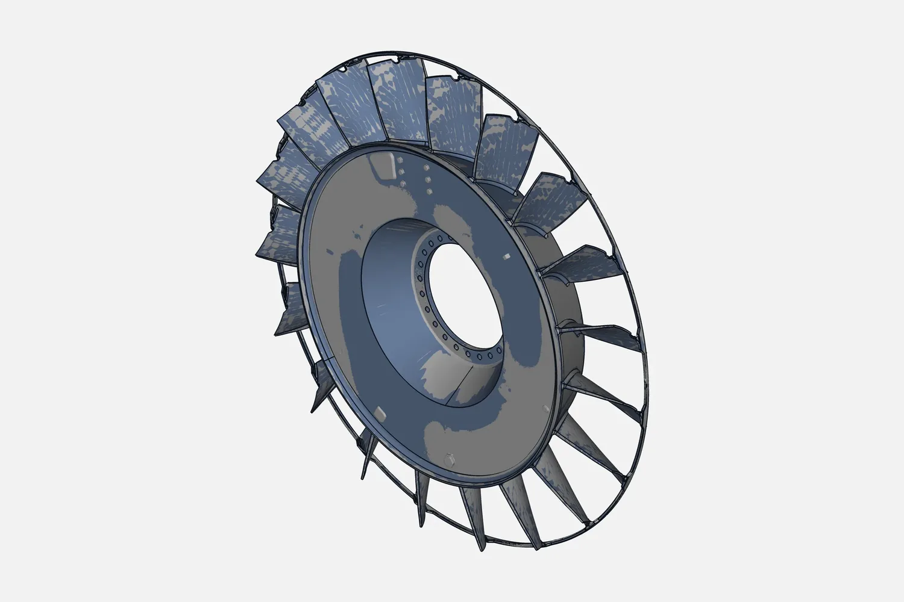

What reverse engineering is, in one paragraph
Reverse engineering turns a physical part into data you can use: a scan of the part, then a CAD model built from it. It is used when the drawing is lost, the maker has stopped supplying the part, or you need to improve or compare an existing design.
When you need reverse engineering
- The drawing or CAD file is lost, or never existed.
- The part is obsolete and the supplier will not or cannot make it. See spare part with no drawing: how we rebuild it.
- A mould, die, casting or fixture has no data and needs to be repeated or repaired.
- A worn or damaged part needs its original shape back.
- You want to compare a made part with its design, or redesign a part that exists.
Our reverse engineering workflow
- Brief. You send a photo, the approximate size, the function of the part and the output you need. The mating part helps if you have it.
- Quote. We confirm the method and send a written quote.
- 3D scan. Handheld blue-laser scanning for small to medium parts, castings and tooling; optical-tracking scanning for large parts where overall accuracy matters. We scan at our Coimbatore facility or at your plant. Shiny or dark surfaces and deep holes can change the method, so tell us the surface.
- Mesh cleaning. The scan is merged and cleaned into a mesh (STL or PLY).
- CAD rebuild. We rebuild the part as a clean, editable model from sections and features of the scan, not as a copy of the rough mesh. On a worn part we rebuild the intended shape, not the wear. Fits and tolerances are agreed with you, because the scan shows the part as it is today. We do not promise a tolerance until we have seen the part and its job.
- Check against the scan. We compare the CAD with the scan and show the difference as a deviation colour map. Inspection reports are normally delivered in 2 to 3 days.
- Delivery. STEP (IGES or Parasolid on request), the mesh and the report if you want them. A 2D drawing can be made from the CAD on request.

If the part is small you can send it to us. Larger parts, heavy dies and fixed machines are scanned where they stand.
What you receive
| Deliverable | Use |
|---|---|
| Editable CAD (STEP, IGES, Parasolid) | Machining, casting, 3D printing, redesign; opens in your own CAD software |
| STL or PLY mesh | Reference, 3D printing, visual checks |
| Deviation colour map and PDF report (with dimensions and GD&T callouts) | Proving the model matches the part, or comparing a made part with its CAD |
| 2D drawing (on request) | Shop-floor and supplier communication |
Industries and parts
The scanner maker lists these industries for this equipment: automotive, rail, aerospace, energy, mould and die, and machinery manufacturing. Typical jobs: spare parts (see industrial machinery 3D scanning and spare parts in India), castings and forgings (see casting and foundry 3D scanning and inspection in India), moulds and tooling (see mould and die 3D scanning and reverse engineering in India), fixtures and jigs, vehicle parts (see automotive 3D scanning and reverse engineering in India). No client is named here. Tell us your part and we will say how the job would run. For the scanning side alone, see 3D scanning services in India. Need a printed copy or fit-check of a scanned part? See 3D printing from your 3D scan. For how a scan becomes an editable model, read scan to CAD in SolidWorks.
How accurate is the result?
Accuracy depends on the scanner, the part and the set-up. The JINUOSH Vertex handheld scanners we distribute are specified by the maker at up to 0.020 mm (Vertex3D and Vertex3D Pro) and 0.025 mm (Vertex Tracker). That is a scanner specification, not a guarantee for every part. We tell you the expected accuracy for your part before we start. See the JINUOSH Vertex scanners, handheld 3D scanner accuracy and our CMM inspection services in Coimbatore for checking the finished part.
What decides the cost of reverse engineering?
We quote per job and do not publish a price list. The main drivers are:
- the size and number of parts,
- the surface and the fine detail,
- how complex the CAD model must be (a simple bracket versus a free-form casting),
- the tolerance and accuracy you need,
- on-site work, travel and accommodation.
Send a photo and a short description and we reply with a written quote.
Where we work
We are based in Coimbatore, Tamil Nadu. We do not claim an office in the cities below: we serve them from Coimbatore, scanning at your plant or receiving small parts from you.
Coimbatore
Our home base, with a facility for scanning small to medium parts and a team that can reach your plant for local jobs. See reverse engineering and 3D scanning in Coimbatore and reverse engineering in Coimbatore: where we are, hours and how to work with us.
Tamil Nadu
We scan and rebuild parts for plants across Tamil Nadu, at our facility or at your site. For Salem, Erode, Madurai, Trichy, Tiruppur and other towns, see reverse engineering services in Tamil Nadu.
Chennai
We serve Chennai from Coimbatore. For a single small part, post or courier it to our Coimbatore facility with a photo and notes; for large parts, dies or machines, we scan at your plant and quote the travel separately. Send the photo first and we confirm which route suits.
Bengaluru
We serve Bengaluru from Coimbatore. Small parts can be sent to us; heavy or fixed items are scanned where they stand. If you also want a scanner of your own, we are a distributor of JINUOSH Vertex scanners in India, see JINUOSH Vertex 3D scanners.
Kochi
We serve Kochi from Coimbatore. Send a photo of the part, the size and the output you need; we confirm whether to send the part to us or scan it at your site, and quote travel separately for site work.
Hyderabad
We serve Hyderabad from Coimbatore on the same terms: photo first, then a written quote, then either the part comes to us or we scan it at your plant.
Based elsewhere in India or in the UAE? Send the photo; the UAE is a service area for us and we confirm the arrangement per job.
Why VShark Solutions
- Operating since December 2019, based in Coimbatore, Tamil Nadu; on site across India.
- Distributor of JINUOSH Vertex 3D scanners in India, so we know the equipment we use.
- One team for scanning, reverse engineering, scan to CAD and inspection.
- Office hours 9 AM to 7 PM.
- Choosing between providers? Read how to choose a 3D scanning service. Service overview: reverse engineering.
Send a photo and a short description of your part for a quote or email info@vsharksolutions.com.
Last reviewed: